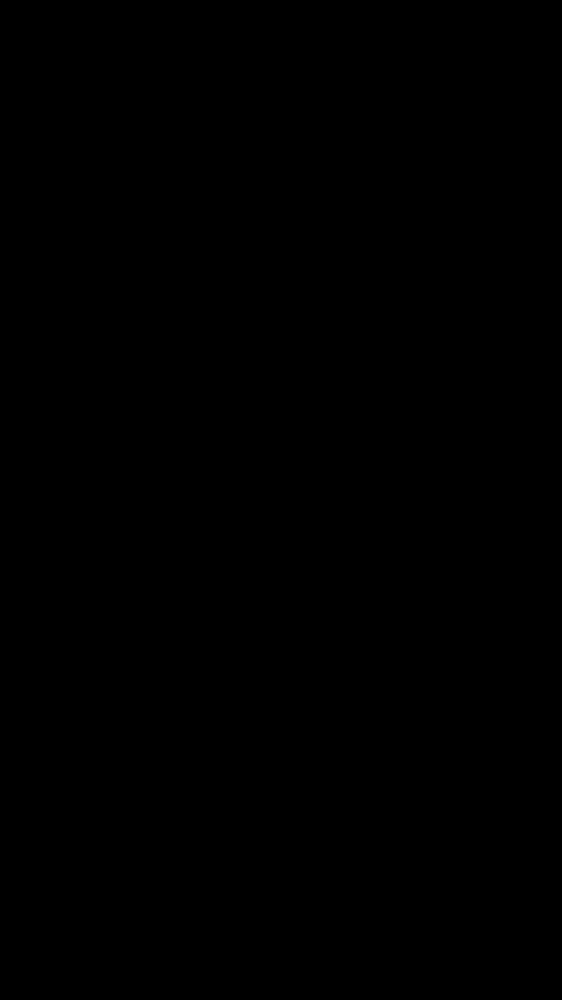
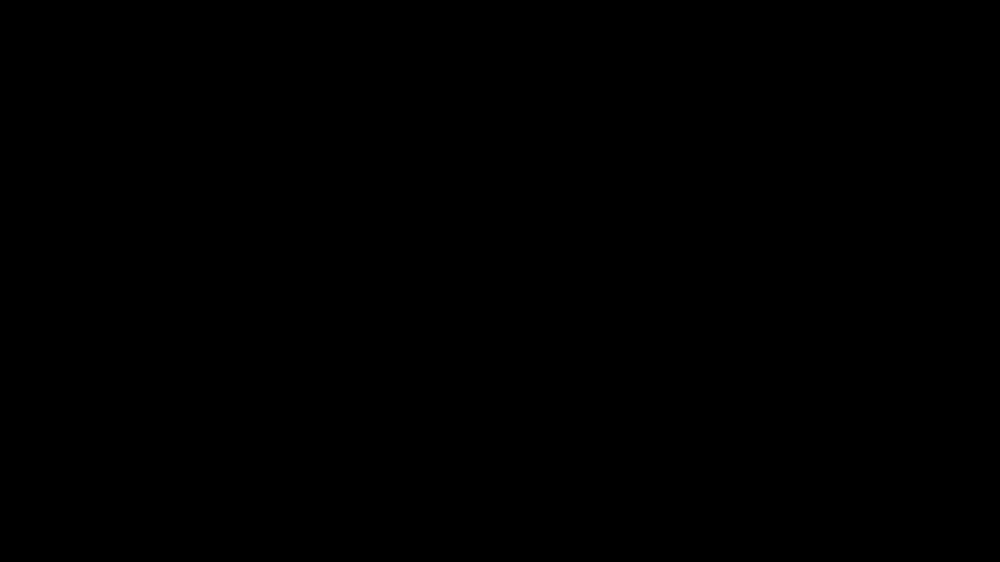
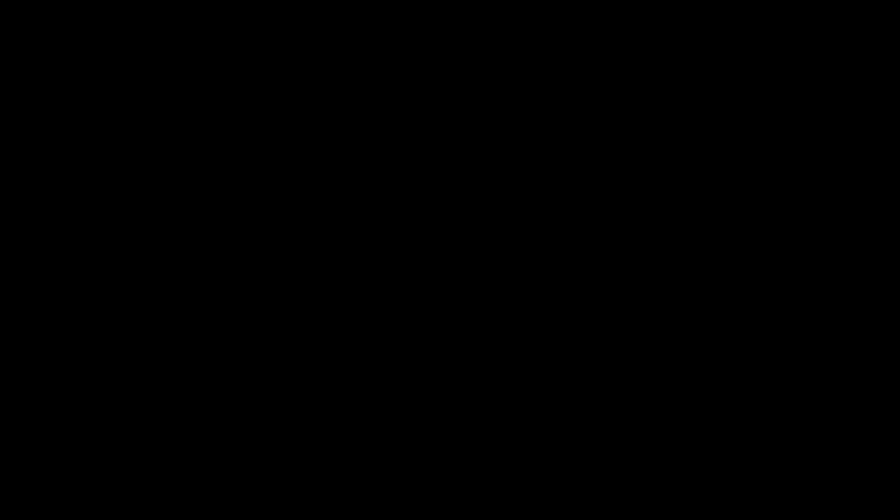
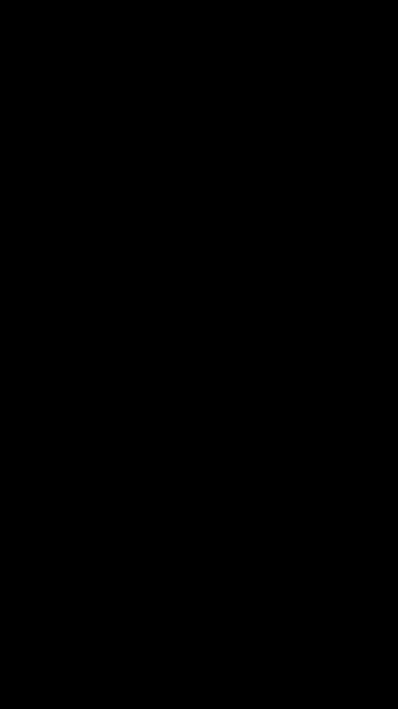
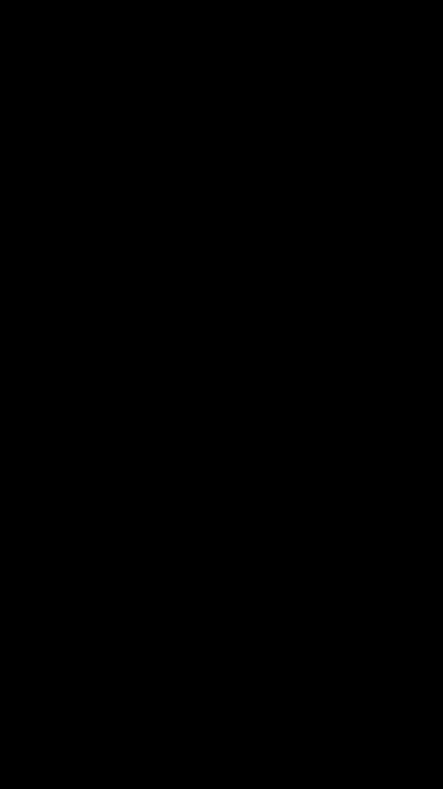
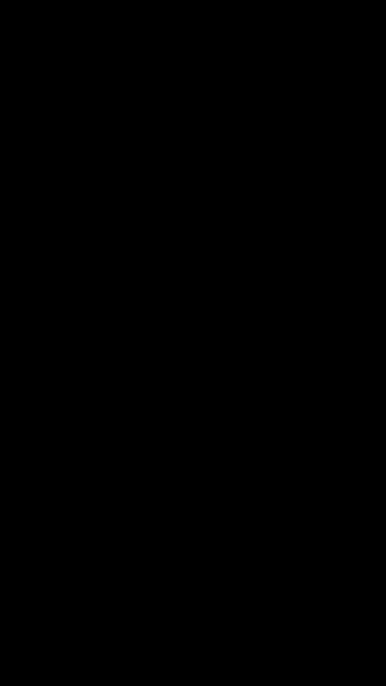
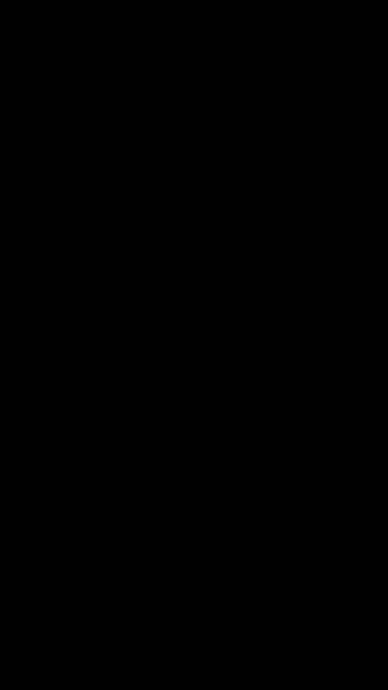
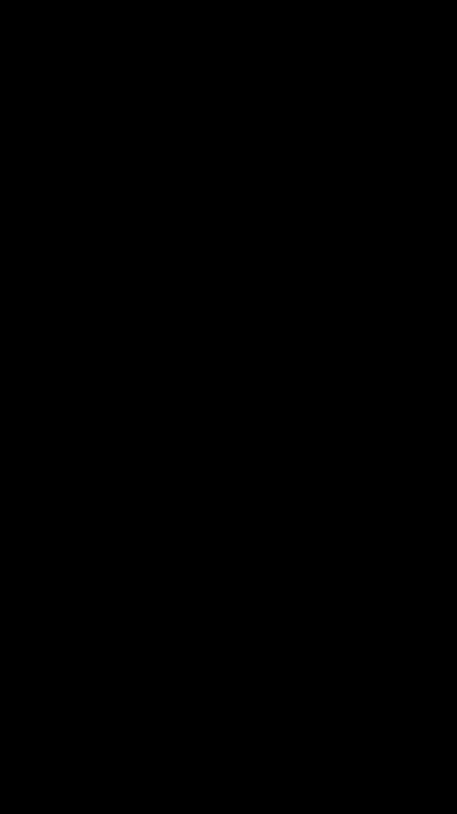
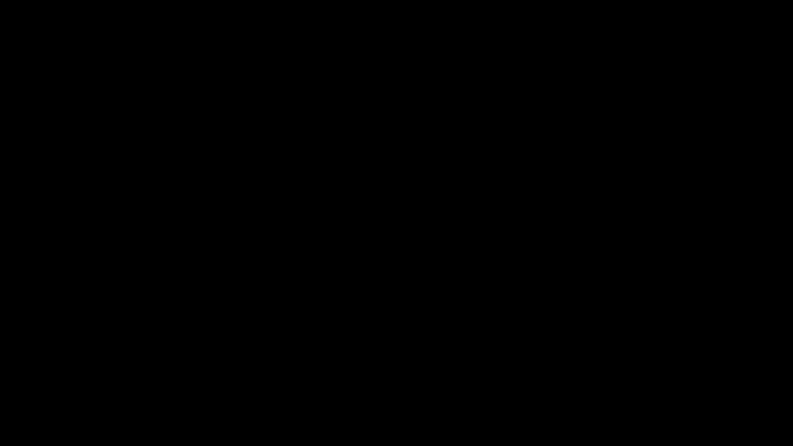
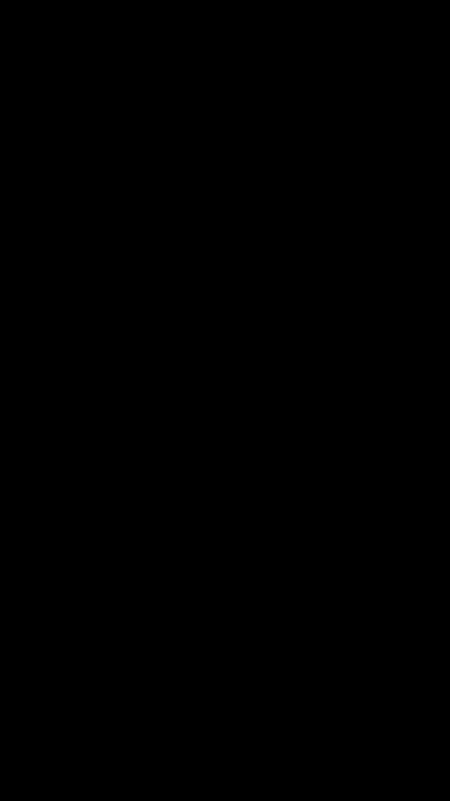

08:12 · 晨光中的前山山道
黄山，中华十大名山之一，世界文化与自然双遗产。奇松、怪石、云海、温泉"四绝"名动天下，花岗岩峰林在云海间若隐若现，是"中国山水画的原型"。
2026年3月29日，我们从清晨出发，从前山拾级而上，经天海、光明顶，再沿西海一侧下山，用镜头记下一路晨光、峰峦与山道。日落后赶到屯溪老街，以一顿地道的徽州臭鳜鱼为这一天收尾。
一日黄山，步步皆景。
清晨从前山登山道启程，晨光一点点爬上峰峦，山道在光影里层层展开。
抵达天海一带，远眺海拔1860米的光明顶——"不到光明顶，不见黄山景"。
沿西海景区前行，奇峰怪石次第出现，视野愈发开阔。
午后在排云亭一带驻足，俯瞰西海大峡谷的千仞绝壁，随后下山。
回到市区，漫步"活动着的清明上河图"——屯溪老街，黄山烧饼与葛根酥香气满街。
夜色里坐下来，尝一顿地道的徽州臭鳜鱼，为这场黄山一日画上句号。
08:14 · 晨光初照山道
清晨的黄山，光先是落在最高的山脊上，然后一寸寸向下蔓延。登山道在晨光里显得格外安静，只有脚步和风声。
花岗岩峰林被晨光染上暖色，远处的群山层层退远，山与天之间是一条清晰而柔和的轮廓线。
08:18 · 群峰渐明
越往上走，山势越开阔。群峰从晨雾与薄云中露出轮廓，奇松扎根于岩缝，石峰如削如刻——黄山"奇、险、峻、秀"的底色，在这一刻尽显。
回望来路，山道如线，蜿蜒在峰谷之间，才明白"身在此山中"的另一种含义。


08:45 · 天海一带
天海是黄山前山与后山的交汇之地，开阔的高山台地四面环峰。从这里望去，光明顶的圆顶建筑与群峰同框，海拔1860米之上，黄山最经典的景致尽收眼底。
上午的光线穿过云层，在峰谷间投下流动的光影，天地之间有一种难得的通透。

09:03 · 光明顶附近
黄山的松，是长在石头上的精神。它们从花岗岩裂隙里探出身来，虬枝舒展，姿态各异，与峰石共同构成一幅天然的中国画。
站在高处远望，山外有山，云外有云——"黄山归来不看岳"的底气，大概就藏在这层层叠叠的远山之间。


09:52 · 向飞来石方向
西海景区以奇峰怪石著称，飞来石、仙人晒靴等象形石点缀其间。峰林在视野里层层排列，像一座巨大的天然盆景园。
沿着山脊前行，风从谷底涌上来，脚下是深不见底的峡谷，远处是绵延不绝的山脉。

13:37 · 排云亭远眺西海
排云亭是观西海的最佳位置之一，名字取自"云海排空"之意。午后站在亭前，西海大峡谷的千仞绝壁在脚下铺展，气势磅礴。
从这里开始，山路转向下山的方向。回头看，峰峦依旧，云海无声——黄山的壮阔，留在了回望里。


18:16 · 老街华灯初上
屯溪老街位于新安江畔，始建于宋代，全长千余米，是目前国内保存最完整的宋明清徽州老街之一，被誉为"活动着的清明上河图"。
入夜后，红灯笼次第亮起，白墙黛瓦、马头墙与石板路在灯火里格外温柔。街边的聚贤楼、黄山烧饼与现做葛根酥，是徽州最鲜活的市井味道。
老街墙上还写着："保护好传统街区，保护好古建筑，保护好文物，就是保存了城市的历史和文脉。"

19:44 · 徽张臭鳜鱼
爬了一天的山，最治愈的是一顿地道的徽菜。臭鳜鱼是徽州名菜之首——"闻着臭，吃着香"，腌制发酵后的鳜鱼肉质紧实、蒜瓣分明，入口咸鲜回甘。
在老街的夜色里，"吃臭鳜鱼，就选徽张"的招牌灯火通明。一口鱼，一口酒，爬山的疲惫在这一刻烟消云散。
花岗岩峰林与奇松共生，前山、天海、西海一路峰回路转，步步皆景。
清晨的光从山脊线开始蔓延，云影在山谷间流动，山与天之间层次分明。
屯溪老街的灯火、黄山烧饼与徽州臭鳜鱼，为壮丽山河添上人间烟火。